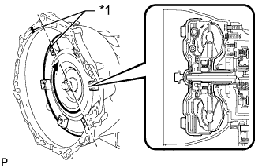

АВТОМАТИЧЕСКАЯ ТРАНСМИССИЯ В СБОРЕ (для моделей с 1KD-FTV) > УСТАНОВКА |
| 1. УСТАНОВИТЕ ГИДРОТРАНСФОРМАТОР В СБОРЕ |
С помощью штангенциркуля и поверочной линейки измерьте расстояние A между поверхностью двигателя, соприкасающейся с трансмиссией, и поверхностью ведущего диска, соприкасающейся с гидротрансформатором.
| *1 | Поверхность двигателя |
| *2 | Поверхность ведущего диска |
Совместите метки на картере трансмиссии и гидротрансформаторе, а затем введите в зацепление шлицы первичного вала и ротора турбины.
| *1 | Метка |
Поворачивая гидротрансформатор, введите в зацепление шлицы вала статора и статора.
| *1 | Метка |
|  |
Поверните муфту гидротрансформатора и совместите метки на гидротрансформатора и картере трансмиссии, чтобы вставить шпонку ведущей шестерни масляного насоса в паз на гидротрансформаторе.
| *1 | Метка |
С помощью штангенциркуля и поверочной линейки измерьте расстояние B, показанное на рисунке, и убедитесь, что оно больше расстояния A, измеренного на первом шаге.
| 2. УСТАНОВИТЕ КРОНШТЕЙН ТРОСА МЕХАНИЗМА ПЕРЕКЛЮЧЕНИЯ ПЕРЕДАЧ № 1 |
Установите кронштейн троса механизма переключения, зафиксировав его 2 болтами.
| 3. УСТАНОВИТЕ РАЗДАТОЧНУЮ КОРОБКУ В СБОРЕ |
| 4. УСТАНОВИТЕ КРОНШТЕЙН ЗАЖИМА ЖГУТА ПРОВОДОВ (для моделей с DPF) |
Установите кронштейн зажима жгута проводов и закрепите его болтом.
| 5. УСТАНОВИТЕ КРОНШТЕЙН ДАТЧИКА № 1 (для моделей с DPF) |
Установите кронштейн датчика № 1 и закрепите его болтом и гайкой.
Закрепите зажим шланга сапуна раздаточной коробки.
| 6. УСТАНОВИТЕ АВТОМАТИЧЕСКУЮ ТРАНСМИССИЮ В СБОРЕ |
Нанесите консистентную смазку для шлицевого соединения сцепления на поверхность коленчатого вала, вступающую в контакт с сердцевиной гидротрансформатора.
| *1 | Сердцевина гидротрансформатора |
| *2 | Коленчатый вал |
Перед установкой трансмиссии удостоверьтесь, что на поверхности блока цилиндров, вступающей в контакт с трансмиссией, закреплены 2 штифта.
Установите трансмиссию и закрепите ее 9 болтами.
| 7. ПОДСОЕДИНИТЕ ЖГУТ ПРОВОДОВ И РАЗЪЕМ |
для моделей с DPF:
Подсоедините разъем датчика положения паркинга/нейтрали, разъем жгута электропроводки трансмиссии, 2 разъема датчиков частоты вращения, разъем дифференциального датчика давления и боковой разъем системы управления раздаточной коробкой.
Установите 10 зажимов жгута проводов.
для моделей без DPF:
Подсоедините разъем датчика положения паркинга/нейтрали, разъем жгута электропроводки трансмиссии, 2 разъема датчиков частоты вращения и боковой разъем системы управления раздаточной коробкой.
Установите 7 зажимов жгута проводов.
Наклоните автоматическую трансмиссию.
| 8. УСТАНОВИТЕ УСТАНОВОЧНЫЙ БОЛТ ГИДРОТРАНСФОРМАТОРА И ВЕДУЩЕГО ДИСКА |
Проверните коленчатый вал, чтобы обеспечить доступ к местам установки 6 установочных болтов гидротрансформатора, и, удерживая ключом болт шкива коленчатого вала, вверните каждый болт.
| 9. УСТАНОВИТЕ ЗАДНЮЮ ПОДУШКУ ОПОРЫ ДВИГАТЕЛЯ № 1 |
Установите подушку задней опоры двигателя на трансмиссию и закрепите ее 4 болтами.
| 10. УСТАНОВИТЕ ПОПЕРЕЧИНУ РАМЫ № 3 В СБОРЕ |
Установите поперечину рамы на подушку задней опоры двигателя и закрепите ее 4 болтами.
Установите поперечину рамы и закрепите ее 4 болтами и 4 гайками.
| 11. УСТАНОВИТЕ ПРАВЫЙ И ЛЕВЫЙ КРОНШТЕЙНЫ ЭЛЕМЕНТА ПЕРЕДНЕЙ ПОДВЕСКИ |
Установите правый и левый кронштейны элемента передней подвески, закрепив их 8 болтами.
| 12. УСТАНОВИТЕ ТЕПЛО- И ШУМОИЗОЛИРУЮЩИЙ ЭКРАН МАСЛЯНОГО ПОДДОНА |
Установите тепло- и шумоизолирующий экран масляного поддона и закрепите его 2 болтами.
| 13. УСТАНОВИТЕ СТАРТЕР В СБОРЕ |
Для 2,2 кВт:
Установите стартер (Нажмите здесь).
Для моделей мощностью 2,7 кВт:
Установите стартер (Нажмите здесь).
Для 3,0 кВт:
Установите стартер (Нажмите здесь).
| 14. ПОДСОЕДИНИТЕ ВПУСКНОЙ ПАТРУБОК МАСЛЯНОГО РАДИАТОРА № 1 И ВЫПУСКНОЙ ПАТРУБОК МАСЛЯНОГО РАДИАТОРА № 1 |
Подсоедините концы 2 патрубков масляного радиатора к соответствующим штуцерам патрубков масляного радиатора, предварительно закрепив их вручную.
Закрепите 3 зажима патрубков масляного радиатора 3 болтами.
С помощью разрезной головки закрепите впускной и выпускной патрубки.
| 15. ПОДСОЕДИНИТЕ ТРОС МЕХАНИЗМА ПЕРЕКЛЮЧЕНИЯ ПЕРЕДАЧ В СБОРЕ |
Подсоедините трос механизма переключения передач к кронштейну троса механизма переключения передач, используя новый фиксатор, а затем подсоедините конец троса к рычагу приводного вала с помощью гайки.
| 16. УСТАНОВИТЕ ПРИЕМНУЮ ТРУБУ В СБОРЕ |
| 17. УСТАНОВИТЕ КАРДАННЫЙ ВАЛ В СБОРЕ |
| 18. УСТАНОВИТЕ ПЕРЕДНИЙ КАРДАННЫЙ ВАЛ В СБОРЕ |
| 19. УСТАНОВИТЕ НИЖНИЙ ЗАЩИТНЫЙ КОЖУХ КАРТЕРА РАЗДАТОЧНОЙ КОРОБКИ |
Установите нижний защитный кожух нижнего картера раздаточной коробки и закрепите его 4 болтами.
| 20. ПОДСОЕДИНИТЕ ПРОВОД К ОТРИЦАТЕЛЬНОМУ ВЫВОДУ АККУМУЛЯТОРНОЙ БАТАРЕИ |
| 21. ДОБАВЬТЕ ЖИДКОСТЬ ДЛЯ АВТОМАТИЧЕСКОЙ ТРАНСМИССИИ |
| 22. ОТРЕГУЛИРУЙТЕ ПОЛОЖЕНИЕ РЫЧАГА ПЕРЕКЛЮЧЕНИЯ ПЕРЕДАЧ |
Снимите задний вещевой ящик в облицовке туннеля пола (Нажмите здесь).
Для моделей с холодильной камерой:
Снимите вещевой ящик в облицовке туннеля пола (Нажмите здесь).
Установите рычаг переключения передач в положение N.
 |
Сдвиньте ползун в направлении, показанном на рисунке, и вытяните фиксатор.
| *1 | Ползун |
| *2 | Фиксатор |
 |
Вдавите фиксатор в регулировочный блок, чтобы зафиксировать его.
Установите задний вещевой ящик в облицовке туннеля пола (Нажмите здесь).
Для моделей с холодильной камерой:
Установите вещевой ящик в облицовке туннеля пола (Нажмите здесь).
| 23. ПРОВЕРЬТЕ ПОЛОЖЕНИЕ РЫЧАГА ПЕРЕКЛЮЧЕНИЯ ПЕРЕДАЧ |
Переведя рычаг переключения передач из положения P в положение R при включенном зажигании (IG) и нажатой педали тормоза, убедитесь в том, что рычаг перемещается плавно и фиксируется в требуемом положении.
Удостоверьтесь, что рычаг переключения передач не останавливается при перемещении из положения R в положение P, и не заедает при перемещении из положения D в положение S.
Запустите двигатель и убедитесь, что автомобиль начинает двигаться вперед после перемещения рычага переключения передач из положения N в положение D и назад после установки рычага в положение R.
Если результат проверки не удовлетворяет требованиям, проверьте датчик положения паркинга/нейтрали в сборе и монтаж напольного механизма переключения передач в сборе.
| 24. ПРОВЕРЬТЕ, НЕТ ЛИ УТЕЧЕК ОТРАБОТАВШИХ ГАЗОВ |
| 25. УСТАНОВИТЕ УПЛОТНЕНИЕ № 1 МЕЖДУ ФАРТУКОМ ЛЕВОГО ПЕРЕДНЕГО КРЫЛА И РАМОЙ |
Закрепите 5 фиксаторами уплотнение № 1 между фартуком правого переднего крыла и рамой.
| 26. УСТАНОВИТЕ УПЛОТНЕНИЕ ФАРТУКА ПРАВОГО ПЕРЕДНЕГО КРЫЛА |
Закрепите 4 фиксаторами заднее уплотнение фартука правого переднего крыла.
| 27. УСТАНОВИТЕ ЗАДНЮЮ ЗАЩИТУ КАРТЕРА ДВИГАТЕЛЯ В СБОРЕ |
Установите заднюю защиту картера двигателя и закрепите ее 4 болтами.
| 28. УСТАНОВИТЕ ЗАЩИТУ КАРТЕРА ДВИГАТЕЛЯ № 1 В СБОРЕ |
Установите защиту картера двигателя № 1 и закрепите ее 4 болтами.
| 29. ВЫПОЛНИТЕ СБРОС ПАМЯТИ |